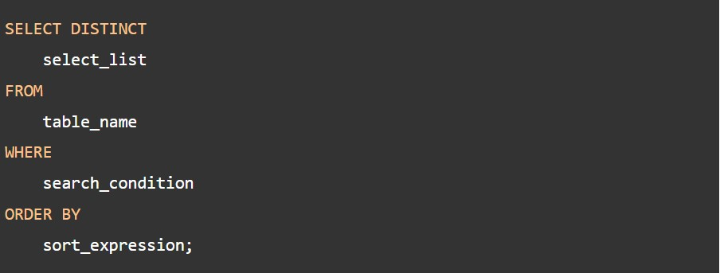

Introduction
This MySQL basics section teaches you how to use SQL statements to manage data in MySQL. It’ll provide you with everything you need to know to work with MySQL effectively.
Querying data
1.SELECT FROM – show you how to use simple SELECT FROM statement to query the data from a single table.
2.SELECT – learn how to use the SELECT statement without referencing a table.
Sorting data
1.ORDER BY – show you how to sort the result set using ORDER BY clause. The custom sort order with the FIELD function will be also covered.
Filtering data
1.WHERE – learn how to use the WHERE clause to filter rows based on specified conditions.
2.SELECT DISTINCT – show you how to use the DISTINCT operator in the SELECT statement to eliminate duplicate rows in a result set.

3.AND – introduce you to the AND operator to combine Boolean expressions to form a complex condition for filtering data.
4.OR>– introduce you to the OR operator and show you how to combine the OR operator with the AND operator to filter data.
5.IN – show you how to use the IN operator in the WHERE clause to determine if a value matches any value in a set.
6.NOT IN – negate the IN operator using the NOT operator to check if a value doesn’t match any value in a set.
7.BETWEEN – show you how to query data based on a range using BETWEENoperator.
8.LIKE – provide you with technique to query data based on a pattern.
9.LIMIT – use LIMIT to constrain the number of rows returned by SELECT statement
10.IS NULL – test whether a value is NULL or not by using IS NULL operator.
Joining tables
1.Table & Column Aliases – introduce you to table and column aliases.
2.Joins – give you an overview of joins supported in MySQL including inner join, left join, and right join.

3.INNER JOIN – query rows from a table that has matching rows in another table.
4.LEFT JOIN – return all rows from the left table and matching rows from the right table or null if no matching rows found in the right table.
5.RIGHT JOIN – return all rows from the right table and matching rows from the left table or null if no matching rows found in the left table.
6.CROSS JOIN – make a Cartesian product of rows from multiple tables.
7.Self-join – join a table to itself using table alias and connect rows within the same table using inner join and left join.
Grouping data
1.GROUP BY – show you how to group rows into groups based on columns or expressions.
2.HAVING – filter the groups by a specific condition.
3.ROLLUP – generate multiple grouping sets considering a hierarchy between columns specified in the GROUP BY clause.
Subqueries
1.Subquery– show you how to nest a query (inner query) within another query (outer query) and use the result of the inner query for the outer query.
2.Derived table – introduce you to the derived table concept and show you how to use it to simplify complex queries.
3.EXISTS – test for the existence of rows.
Common Table Expressions
1.Common Table Expression or CTE – explain to you the common table expression concept and show you how to use CTE for querying data from tables.
2.Recursive CTE – use the recursive CTE to traverse the hierarchical data.
Set operators
1.UNION and UNION ALL – combine two or more result sets of multiple queries into a single result set.
2.INTERSECT – show you a couple of ways to simulate the INTERSECT operator.
3.MINUS – explain to you the SQL MINUS operator and show you how to simulate it.
Modifying data in MySQL
In this section, you will learn how to insert, update, and delete data from tables using various MySQL statements.
1.INSERT – use various forms of the INSERT statement to insert data into a table.
2.INSERT Multiple Rows – insert multiple rows into a table.
3.INSERT INTO SELECT – insert data into a table from the result set of a query.
4.INSERT IGNORE – explain you the INSERT IGNORE statement that inserts rows into a table and ignores rows that cause errors.
5.UPDATE – learn how to use UPDATE statement and its options to update data in database tables.
6.UPDATE JOIN – show you how to perform cross-table update using UPDATE JOIN statement with INNER JOIN and LEFT JOIN.
7.DELETE – show you how to use the DELETE statement to delete rows from one or more tables.
8.ON DELETE CASCADE – learn how to use ON DELETE CASCADE referential action for a foreign key to delete data from a child table automatically when you delete data from a parent table.
9.DELETE JOIN – show you how to delete data from multiple tables.
10.REPLACE – learn how to insert or update data depends on whether data exists in the table or not.
11.Prepared Statement – show you how to use the prepared statement to execute a query.